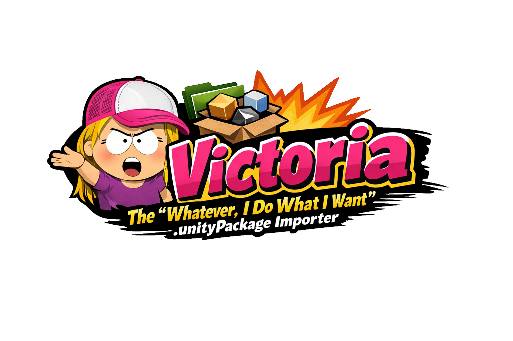
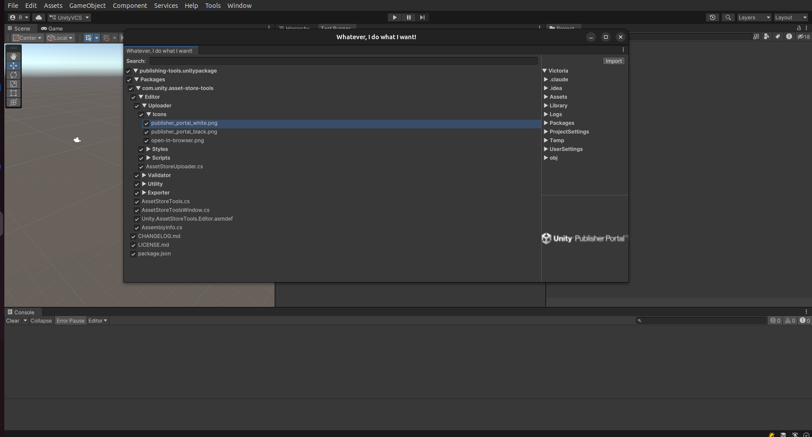

|
Victoria
Whatever, I do what I want .unityPackage importer
|
|
Victoria
Whatever, I do what I want .unityPackage importer
|

*"You're not my real mom, Unity. You can't tell me where to put my files."* — Victoria, probably
You've been there. You double-click a .unitypackage. Unity opens its little import dialog. You click Import. And suddenly your project has a Assets/SomeRandom/Vendor/DeepNested/Scripts/Utilities/Helpers/Manager/ folder shoved right into your carefully curated directory structure. No warning. No negotiation. Just files, wherever the package author felt like putting them on the day they made it.
Well. Not anymore.
Victoria is the *"Whatever, I do what I want"* .unitypackage importer. She doesn't care what the package author intended. She doesn't care about their folder structure. She reads the package, shows you what's inside, and then — and this is the important part — lets YOU decide where everything goes.
Victoria opens a full tree view of every folder and file inside the .unitypackage. You can poke around, judge the structure, and decide you absolutely do not want TheirScripts/Utils/StringExtensions.cs cluttering up your project before you've even imported a single byte. Checkboxes let you select exactly what you want and skip the rest.
See that script? Drag it to your Scripts/ folder. See that texture? Drop it in Art/Environment/. You are not a victim of someone else's folder conventions. The right-hand panel shows your actual project structure, and you can drop package assets directly into any folder you like. Total control. Zero compromises.
The drag and drop system is internally called SleurEnPleur, which is Dutch for "drag and dump". You're welcome.
Click any file in the package tree and Victoria shows you what's inside before you import it. She supports:
.cs, .json, .md, .txt, .uss, .uxml, .asmdef, .asset, .meta — full scrollable source code view.mp3, .wav, .ogg — play button included, no questions asked.fbx, .dae, .obj, .3ds, .dxf — she sees them, she acknowledges themIf there's no preview available she'll tell you straight up. No drama. Well, some drama.
The package tree has a search bar. Type a name, Victoria runs a breadth-first search through the entire package structure and highlights the matching nodes. Finding that one script buried six folders deep has never been more satisfying.

Yes, Addressables exist. Yes, AssetBundles exist. Victoria is aware. Victoria imports .unitypackage files at runtime anyway, on a Tuesday afternoon, just because she can.
This is a pure API. No file explorer, no window, no cross-platform file picker nonsense. You give Victoria a path. She does the rest.
Once she's done, everything is sitting in Application.persistentDataPath and Victoria has moved on with her life. What happens next is entirely your business. Load a .fbx with your favorite runtime model loader. Play back audio. Hotpatch your game with fresh assets without touching a build. Use whatever third-party library you want for whatever asset type you want. She does not care. She put the files on disk. Her job is done.
Add the package via the Unity Package Manager using the git URL:
Or add it directly to your manifest.json:
Unity 2019.4 or higher. Victoria has standards.
.unitypackage fileBecause sometimes a package author puts their files in Assets/TheirCompanyName/TheirProductName/Version/1_0/Runtime/Scripts/Core/ and you just want to scream *"WHATEVER! I DO WHAT I WANT!"* and put them in Scripts/ like a normal person.
Victoria gets it. Victoria is you.
PRs welcome. Victoria has no gatekeepers. She does what she wants — and so can you.
Made by HamerSoft — inspired by a very specific energy.